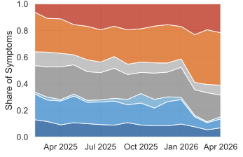

Why real sessions?
Existing studies of coding-agent failures replay benchmark trajectories. We study misalignment as developers experience it in real-world sessions.
Misalignment is a breakdown in developer–agent collaboration made visible by the developer’s correction or pushback.
20,574 real sessions, two sources
Characterized developers’ prompt behavioral intents, session structures, and interaction dynamics.
| IDE | 12,231 |
|---|---|
| Cursor | 3,234 |
| GitHub Copilot | 366 |
| Unknown * | 8,631 |
| CLI | 8,343 |
|---|---|
| Claude Code | 6,648 |
| OpenCode | 624 |
| Codex | 517 |
| Gemini CLI | 39 |
| Cursor CLI | 32 |
| Unknown * | 483 |
A three-stage LLM pipeline
What goes wrong, and why
Cheap damage, costly attention
Most episodes cause no lasting system damage. The cost falls on the developer’s time and trust.
One episode, from log to labels
CLI agents break rules; IDE agents break code
Interaction shapes attention: IDE developers watch the code; CLI developers hand over control and watch the rules.
† share of system-damage episodes. All differences p < 0.001.
Misalignment co-occurs, persists, and shifts
higher probability of misalignment in the next session (0.519 after a misaligned session vs. 0.336 otherwise)
Misalignment per user turn declines ≈ 0.008 per month.

Explore the data
Interaction-level failures are the new gap
Code-level symptoms decline in share, while constraint violations and inaccurate self-reporting rise.
Today’s safety rests on the developer
Most visible fixes require real-time developer pushback. That oversight may not scale to longer-running background agents.
Session logs are a behavioral signal
The pipeline could turn live-session misalignment into evaluation cases and training signals for agent teams.